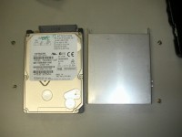

トップページ＞＞＞「いろいろ」目次
SHARP Mebius PC-MV1-C1F HDD換装記(40GB→60GB)
初版作成：2003/04/08
- 前書き
- 本題
- 後書き或いは感想
バイト先の先輩の度重なる宣伝広告に毒されたのか、それとも真実CD-ROM内蔵のNotePCが欲しいと思ったのか自分自身でも判別つきませんが。
SHARP Mebius PC-MV1-C1F を購入しました。衝動的に。
んで、Linuxで遊ぼうかと思ったのですが・・・「何か、元々入っているWindowsXP消すのもったいないなあ。」「BSDとかも実験したいなあ・・・VMwareも使う予定だし・・・。」
いろいろ思案して、せっかくだからWindowsXPの入っている40GBHDDはとっておき、60GBHDDに入れ替える事にしました。というわけで、今回は写真入りでHDD換装の様子をお伝えします。
それと。HDD換装を自分で行うとメーカー保証が効かなくなりますので、修理の際保証期間内でもお金を払うことになりますので注意してください。
では、静電気と衝撃に注意して行きましょう。
目次に戻る
とりあえずMebiusと60GBHDDのスナップショット。
これから分解していきます。60GBHDDは東芝のMK6021です。
Mebiusをひっくり返してバッテリーパックを外します。で、拡大写真中で指示してある箇所のネジを外します。小さいので精密ドライバーセットを使う必要があると思います。
ネジを外すと、写真のように手前側のパッド部分が取り外せます。
パッド部分を外してひっくり返した写真です。HDDが左側に格納されているのが見えます。
HDD格納部分を左手側から接写しました。ヘッドホンやマイク端子などの小さなサイドカバーが存在します。サイドカバーは外しておきます。
HDD格納部分の拡大写真です。専用の取り付け金具に固定され、右手側にコネクタがあります。取り外し方は、取り付け金具ごと軽く上に持ち上げ、左右に揺らしながら少しずつ外していきます。或る程度コネクタ部分に隙間ができれば、マイナスドライバーを差し込んでぐりりと外してしまっても良いでしょう。
無事外し終わったHDDです。小さくて細長い黒いパーツは、先ほどのサイドカバーです。
取り付け金具を見てみると、横っちょに四ヶ所ネジ止めされています。これを外すと、HDDを取り出せます。

取り外せたHDDと取り付け金具。HDDは日立製でした。拡大写真にマークしてありますが、IDEコネクタ部分に特殊なスペーシングコネクタ（？）が取り付けられています。これを新しいHDDに移します。
古いHDDからスペーシングコネクタを外して・・・
新しいHDD(MK6021)に取り付けます。んで、取り付け金具のネジを締めます。ここまで来れば9割方完了です。
本体に取り付けます。HDDを置いて・・・
横っちょから。このままスライドさせてコネクタを押し込んでいきます。
取り付け終了です。サイドカバーも元に戻してあげます。ひっくり返しておいたパッドも元に戻し、ネジ止めします。
ネジ止め中・・・
電源を入れ、BIOSを立ち上げてみましょう。しっかりと60GBが認識されていますね。成功です！
目次に戻る
というわけで、60GBへの換装は終了です。
Linuxのインストールに関してはそれほど難しくありません。ビデオメモリをBIOSで8MB位に固定してあげればXも動きます（デフォルトでは可変する設定になっていてXが認識できない）。
ただ・・・
１．BIOSサスペンドが効かないし
２．無線LANのためにPCMCIAスロットが一つだけになってますし、
３．しかも無線LANは認識しませんし、
４．内蔵モデムはAC97でLinux用のモデムドライバが今現在存在せず使えませんし（有志が開発を進めては、いる。AC '97 Modem Driver Projectを参照。しかしMax OS X のPowerBookではすでにAC97が動いている。何故だああ！！）、
４．サウンドに関してもAC'97+Alsaでは微妙に高音域に「びびり」が入ってしまい、XMMSで調整しなくては少々聴きづらいし、
５．X起動時にしばらく砂嵐が表示されてしまうし、
６．Turbolinux Workstation 8 UpdateKitをインストールする際コンソールインストールでさえ、画面拡大をBIOSで設定していると落ちるし、
７．APMのバッテリー残量が取得できないし。
このようにLinuxでは非常に扱いづらいハードウェアでもあります。
まあ、1GHz+768MB+VMwareでWin2kできるから良いんですけどねえ・・・。
というわけで、今回は以上です。
目次に戻る
トップページ＞＞＞「いろいろ」目次